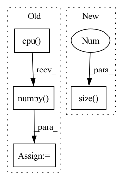

Pattern ID :10948
Before Change
predicted_probs, predicted = self.get_predicted(outputs)
y_pred_probs += list(predicted_probs.cpu().detach().numpy())
y_pred += list(predicted.cpu().detach().numpy() )
y_true += list(labels.cpu().detach().numpy())
calculated_metrics = {}After Change
if criterion:
batch_loss = criterion(outputs, labels)
total_loss += batch_loss.item()*inputs.size(0 )
predicted_probs, predicted = self.get_predicted(outputs)
//print("Labels ", labels.cpu().detach().numpy())
//print("Predicted ", predicted.cpu().detach().numpy())In pattern: SUPERPATTERN
Frequency: 4
Non-data size: 4
Instances Fragment ID: 37835169
Project Name: biasvariancelabs/aitlas
Commit Name: 30b9944f7086274457283b8aeedc50d88e000e54
Time: 2020-10-29
Author: ivica.dimitrovski@gmail.com
File Name: aitlas/base/models.py
M Class Name: BaseModel
N Class Name: BaseModel
M Method Name: evaluate_model(4)
N Method Name: evaluate_model(4)
M Parent Class: nn.Module,Configurable
N Parent Class: nn.Module,Configurable
M File Name: aitlas/base/models.py
N File Name: aitlas/base/models.py
M Start Line: 179
M End Line: 217
N Start Line: 176
N End Line: 225
Before Change
end_index = interaction[self.ITEM_LIST_LEN].cpu().numpy().tolist()
item_list = item_list.cpu().numpy().tolist()
item_feature_list = item_feature_list.cpu().numpy() .tolist()
// we will padding zeros at the left side
// these will be train_instances, after will be reshaped to batchAfter Change
def reconstruct_pretrain_data(self, item_seq, item_seq_len):
device = item_seq.device
batch_size = item_seq.size(0 )
// We don"t need padding for features
item_feature_seq = self.item_feat[self.FEATURE_FIELD][item_seq] - 1
Fragment ID: 37835168
Project Name: rucaibox/recbole
Commit Name: 1714ed39db89b102bc46fc23155f92de0d8996bd
Time: 2020-10-15
Author: hui.wang@ruc.edu.cn
File Name: recbox/model/sequential_recommender/s3rec.py
M Class Name: S3Rec
N Class Name: S3Rec
M Method Name: reconstruct_pretrain_data(3)
N Method Name: reconstruct_pretrain_data(2)
M Parent Class: SequentialRecommender
N Parent Class: SequentialRecommender
M File Name: recbox/model/sequential_recommender/s3rec.py
N File Name: recbox/model/sequential_recommender/s3rec.py
M Start Line: 287
M End Line: 296
N Start Line: 272
N End Line: 282
Before Change
items, n_node, A, alias_inputs = [], [], [], []
max_n_node = item_id_list.size(1)
item_id_list = item_id_list.cpu().numpy()
for u_input in item_id_list:
node = np.unique(u_input)
items.append(node.tolist() + (max_n_node - len(node)) * [0])After Change
mask = item_seq.gt(0)
items, n_node, A, alias_inputs = [], [], [], []
max_n_node = item_seq.size(1 )
item_seq = item_seq.cpu().numpy()
for u_input in item_seq:
node = np.unique(u_input)
items.append(node.tolist() + (max_n_node - len(node)) * [0]) Fragment ID: 37835170
Project Name: rucaibox/recbole
Commit Name: 1714ed39db89b102bc46fc23155f92de0d8996bd
Time: 2020-10-15
Author: hui.wang@ruc.edu.cn
File Name: recbox/model/sequential_recommender/srgnn.py
M Class Name: SRGNN
N Class Name: SRGNN
M Method Name: get_slice(2)
N Method Name: get_slice(2)
M Parent Class: SequentialRecommender
N Parent Class: SequentialRecommender
M File Name: recbox/model/sequential_recommender/srgnn.py
N File Name: recbox/model/sequential_recommender/srgnn.py
M Start Line: 156
M End Line: 164
N Start Line: 162
N End Line: 166
Before Change
// Draw keypoint matches
src = out["src_rc"][-1].squeeze().detach().cpu().numpy()
tgt = out["tgt_rc"][-1].squeeze().detach().cpu().numpy()
match_weights = np.exp(out["match_weights"][-1].squeeze().detach().cpu().numpy() )
keypoint_ints = out["keypoint_ints"]
ids = torch.nonzero(keypoint_ints[-1, 0] > 0, as_tuple=False).squeeze(1)After Change
// Draw scores
scores = out["scores"][-1]
if scores.size(0 ) == 3:
scores = scores[1] + scores[2]
scores = scores.squeeze().detach().cpu().numpy()
plt.imshow(scores, cmap="inferno") Fragment ID: 37835173
Project Name: utiasasrl/hero_radar_odometry
Commit Name: c1043c84c77f1a20b667d981d4cd286cb378c71a
Time: 2021-01-25
Author: david.yoon@robotics.utias.utoronto.ca
File Name: utils/vis.py
M Class Name: AnonimousClass
N Class Name: AnonimousClass
M Method Name: draw_batch_steam(3)
N Method Name: draw_batch_steam(3)
M Parent Class:
N Parent Class:
M File Name: utils/vis.py
N File Name: utils/vis.py
M Start Line: 55
M End Line: 134
N Start Line: 95
N End Line: 122